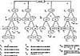

by Abraham Kandel
CRC Press, CRC Press LLC
ISBN: 084934297x Pub Date: 11/01/91
|
|
Fuzzy Expert Systems
by Abraham Kandel CRC Press, CRC Press LLC ISBN: 084934297x Pub Date: 11/01/91 |
| Previous | Table of Contents | Next |
First, a relational representation is employed. The advantages of the relational model over other common data base representation techniques have been described by Tanimoto,26 Rundensteiner,22 and others. Unlike semantic nets, for example, when the size of a relational data base (RDB) increases, retrieval time does not increase, a significant issue in maintaining response times. Also, the RDB model is associated with a set of well-defined operators that permit extremely flexible data manipulation and facilitate both high-level retrieval and development of friendly query languages.
Second, we have incorporated into our RDB an extension that allows for each student’s model to contain fuzzy data entries. This permits the representation of incomplete, imprecise, and vague information about the student, as well as precise data. An example of an imprecise entry would be a notation indicating that the student often, but not always, performs as an expert on two-schema problems (somewhat of an expert). An example of a vague entry resulting from incomplete data would be a notation indicating that the student is probably an older student. Although such information, as obtained, is often inherently inexact and vague, it can provide valuable guidance for global planning decisions, such as the selection of lesson goals and problems.

Figure 5 Expert solutions module solution tree for car problem.
Figure 6 Possible domain values in a FRDB relation student. *Represents uncertainty; **represents a range of uncertainty.
Our final enhancement to the fuzzy relational data base (FRDB) is a temporal extension, which addresses the issue of how to store information over time. This is accomplished by maintaining multiple tuples within each student relation, each tuple representing a holistic student evaluation at a different point in time. Historical data permits us to evaluate the student’s development over the sequence of his sessions on an ITS. This is necessary for effective tutoring at the global level, because the student does not always have a consistent performance and a trend of behavior has to be developed over several sessions. A poor performance may represent a bad day and, thus, should not unduly bias selection of future instructional goals and problems. Storing information over time improves the global performance of the system as it enhances the system’s understanding of the student and his behavior. It also makes a useful research tool, since it allows for comparison and analysis of student’s performance changes. Thus, the actual effectiveness of the system as a tutor can be verified.
A heterogeneous data representation with weakly typed data domains is used. The various types of values that can be assigned to an element are:
The relation in Figure 6 demonstrates some of these choices. A review of existing ITSs reveals that, to date, the binary approach has been used to indicate whether a student does or does not have a particular characteristic. The advantages of a nonbinary representation are obvious. Consequently, the choice of a fuzzy approach is both a positive and necessary enhancement for the student record.
An analysis of the kinds of information necessary in a SR supports the preceding five categories; however, no other existing ITS has this ability. The following examples illustrate typical items that may be stored. A teacher may want to store the information that a particular student is very good in type X problems but only average in type Y problems. Or, a teacher using the tutoring system might request a list of all first period students who are performing very well on two-schema problems but below average on three-schema problems. Also, our SR houses fuzzy linguistic information on the student’s typical motivation level. It has been determined12 that motivation is a significant component in a student’s success or lack of it in word problems. Knowledge of the student’s motivational level (from teacher input and system observation and inference) is used to determine the extent and type of tutoring offered.
By incorporating temporal knowledge in our SR, the tutor can detect trends in the student as well as inconsistencies in performance. Knowledge of the student’s level of expertise for solving particular problem types is used to individualize the tutoring. We are also incorporating information on executive level skills. For example, we wish to promote such executive level skills as self-monitoring and good memory management. These are a few specific examples of the types of information that can be stored in the system. In addition, the design of the SR allows the researcher to augment these with other student characteristics that are determined to be relevant by using linguistic codes, ranges, fuzzy possibilities, and incomplete data.
| Previous | Table of Contents | Next |
){kind=link}
){kind=link}